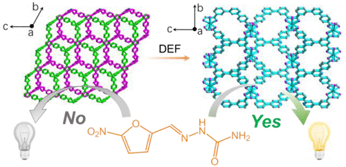
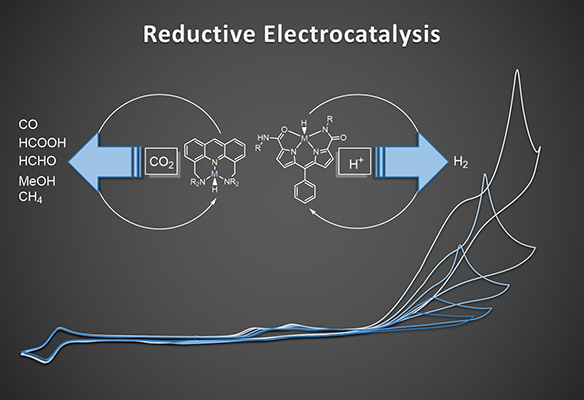
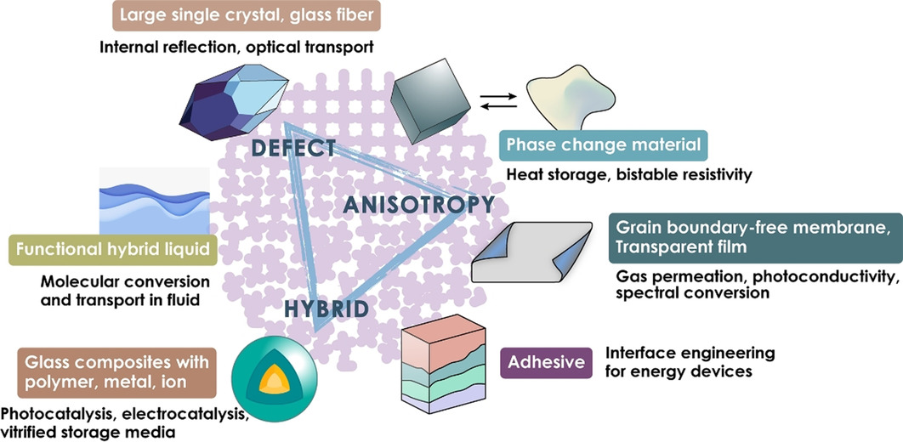

Research Projects
Construction of Novel Metal-Organic Frameworks as Heterogeneous Catalysts

Metal-organic frameworks (MOFs), derived from metal ions or clusters (“nodes”) and organic ligands (“linkers”), are widely explored in the area of gas storage and separation, heterogeneous catalysis, light-harvesting and chemical sensing, as well as biomedical imaging and drug delivery. Owing to their adjustable porous structures, modifiable luminescent response sites, and tailored frameworks, MOF-based sensors often exhibit excellent sensitivity, high selectivity and reusability compared to other luminescent sensors in the detection of explosives, metal ions, amino acids, and antibiotics. We aim to design and construct a class of unique MOFs using polycarboxylic acid ligands based on the bulky aromatic ring skeleton with a large conjugated π-system.
Development of Competent Molecular Electrocatalysts for Carbon Dioxide Reduction

The aim is to develop novel and improved molecular electrocatalysts, utilizing earth-abundant metals, for small molecule activation and catalysis in the area of energy research and green chemistry. The interest lies in flexible coordination environments and interactions between transition metal centers and ligand spheres. With specific understandings of steps and reactive intermediates involved in the catalytic turnover from both kinetic and thermodynamic perspectives by analytic techniques, the purpose is to provide a framework for the rational design of highly effective environment-friendly catalysts.
Melting and Vitrification Behavior of Porous Materials

The field of porous materials, including metal-organic frameworks (MOFs) and coordination polymers (CPs), has to date focused on the crystalline state. However, the observation and control of disorder and defects in MOFs/CPs are important for investigating metastable characteristics in the structures and examining their functions as catalysis, their conductivity, etc. Currently, the development that is related to the melting and vitrification of crystals of a family of MOFs/CPs is taking place, with examples needed for a complete understanding of the general behavior. The aim is to design a new class of liquid crystals and melt-quenched glasses with exploring their fundamental phase behaviors and responsiveness to external stimuli, as well as employing these materials for targeted applications.